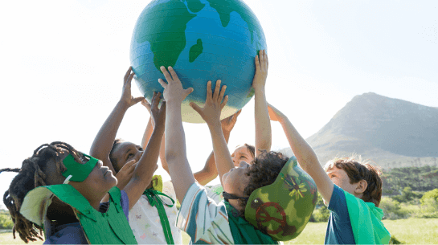
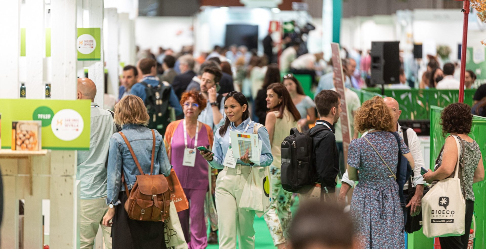

| Conferencias | |
|---|---|
| Contamos con una gran variedad de formaciones y conferencias donde expertos en sostenibilidad compartirán conocimientos sobre energías renovables, reducción de residuos y estrategias ecológicas para empresas y comunidades. | |
| Talleres | |
|---|---|
| Participa en nuestros talleres interactivos donde aprenderás técnicas prácticas para un estilo de vida más ecológico, como la fabricación de compost, el reciclaje creativo y la creación de huertos urbanos. | |
| Actividades ecológicas | |
|---|---|
| Disfruta de actividades al aire libre diseñadas para fomentar el cuidado del medio ambiente. Desde jornadas de reforestación hasta limpieza de playas y parques, cada acción cuenta para proteger nuestro planeta. |  |
| Ferias beneficas | |
|---|---|
| Explora nuestras ferias benéficas donde organizaciones y emprendedores sostenibles exhiben productos ecológicos, iniciativas solidarias y soluciones innovadoras para un futuro más verde. |  |